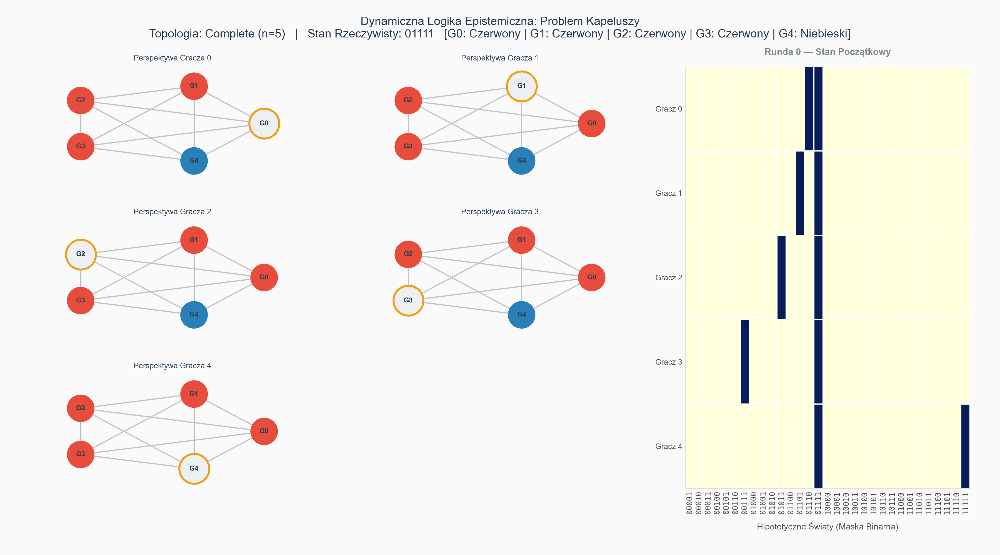

Problem Kapeluszy
Dynamiczna Logika Epistemiczna
Ewolucja wiedzy w systemach wieloagentowych
Architektura Stanów
- Przestrzeń Możliwych Światów ($\Omega$): Globalny stan systemu to wektor binarny $\omega \in \{0, 1\}^N$.
- Relacja Nierozróżnialności ($R_i$): Zdefiniowana przez topologię grafu. Agenci nie widzą swoich węzłów.
$$(\omega, \omega') \in R_i \iff \forall j \in N(i), \omega_j = \omega'_j$$
- Stan Epistemiczny: Zbiór światów, które agent $i$ uważa za możliwe:
$$\mathcal{K}_i(\omega) = \{ \omega' \in \Omega \mid (\omega, \omega') \in R_i \}$$
Dynamika Wiedzy
Ewolucja zachodzi poprzez logikę ogłoszeń publicznych (PAL).
- Inicjalizacja ($\phi_0$): "Istnieje co najmniej jedna czerwona czapka". Usuwa wektor $\mathbf{0}$. Wymaga, by w rzeczywistości $\omega^* \neq \mathbf{0}$.
- Operator Milczenia ($\sigma_t$):
$$\sigma_t = \bigwedge_{j \in V} \neg (K_j p_j \lor K_j \neg p_j)$$
- Rekurencyjna Redukcja:
$$\Omega_{t+1} = \{ \omega \in \Omega_t \mid \Omega_t, \omega \models \sigma_t \}$$
Analiza Topologii
- Graf Pełny ($K_N$): Wiedza budowana w czasie. Przy $k$ czerwonych czapkach, agenci zgadują w rundzie $T=k-1$.
- Cykl ($C_N$): Horyzont Epistemiczny. Prędkość propagacji zależy od odległości geodezyjnej $d(i, j)$.
- Gwiazda ($S_N$): Deadlock i pasożytnictwo informacyjne. Jeśli centrum ma $0$, a dwa liście $1$, weryfikacja staje w rundzie $t=1$.
Wyzwania Obliczeniowe
- Weryfikacja wiedzy jest problemem PSPACE-complete (zagnieżdżone kwantyfikatory, przestrzeń $2^N$).
- Wektoryzacja SIMD: Instrukcje AVX2 / AVX-512 pozwalają przetwarzać 256 bitów w jednym cyklu zegara.
- Złożoność operacji na zbiorach spada z $\mathcal{O}(2^N)$ do $\mathcal{O}(2^N / 256)$. Bez tego systemy HFT dławiłyby się przy $N > 10$.
Topologia: Graf Pełny

Porównanie: Cykl vs Gwiazda
Wnioski końcowe
Topologia to epistemologia.
-
Gęstość: W grafach gęstych (np. pełny) wiedza buduje się sekwencyjnie poprzez zliczanie kolejnych rund.
-
Geometria: W grafach rzadkich (np. cykl) czas propagacji milczenia jest zdominowany przez dystans fizyczny między agentami.
-
Asymetria ról: W grafach o nieregularnej strukturze (np. gwiazda) występuje zjawisko pasożytnictwa informacyjnego. Centrum buduje wiedzę, doprowadzając liście do trwałej pułapki informacyjnej.